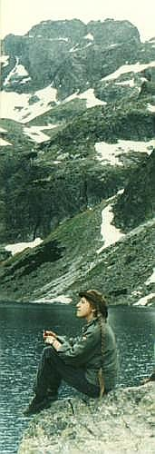

Byli sobie na Hali Gąsienicowej góralka i jej syn, którzy wypasali tam owce. Syn był pracowity, ale grymaśny do jedzenia. Któregoś dnia chłopak wraca w południe na obiad, próbuje podanej mu zupy, krzywi się: -Niedobro, nie bede tego jod. -Ah bo widzis synku - mówi matka - to bez to, ze skońcyły mi sie ziołka, musis póść i mi je prziniesies. -Kaz? -Dyć kajsi na Zawracie. Hybaj na Zawrat. Pobiegł chłopak na przełęcz Zawrat, przyniósł listki, które mu matka opisała, ona dodała je do zupy, ale jedzenie mu nadal nie smakuje. -A bo jesce jednego ziołka mi trza - pódź na Kościelec, przinieś mi je. Pobiegł chłopak na szczyt Kościelca, wygrzebał z między kamieni jakieś trawki, przyniósł matce. Ona dała je do zupy i podała synowi. -Lepse trochu, ale nie bede jod. -A bo jesce jeden listecek musis mi przinieść. Z Krziznego. Pobiegł chłopak, coraz trudniej mu się szło, bo się zmęczył, kawał drogi przecież na przełęcz, przez Dolinę Pańszczycy. Kiedy wrócił, to już był wieczór, więc rzucił się na zupę - -Oh, matuś, jakie dobre to jadło... Strona główna
Jeżeli znasz piękny wiersz lub fragment prozy o Tatrach
|
 |